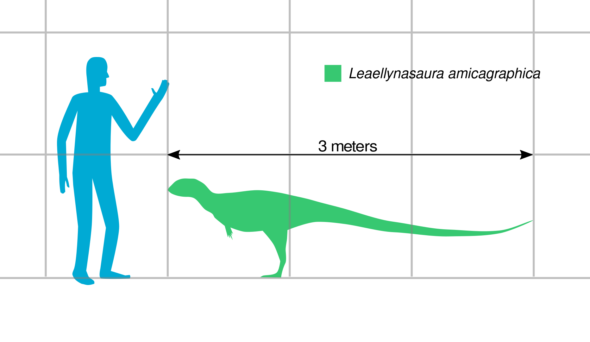
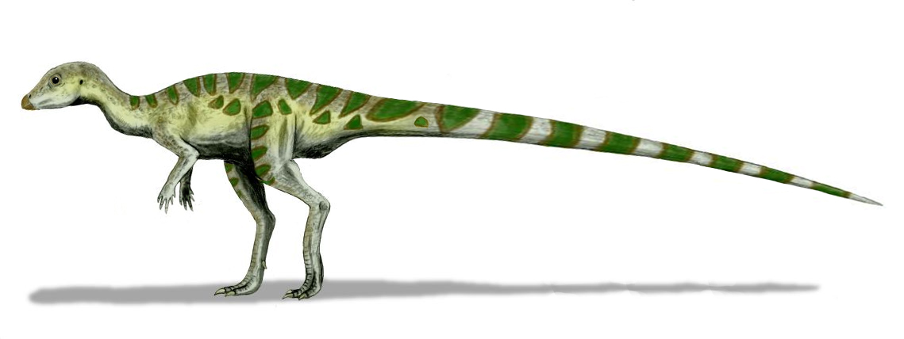
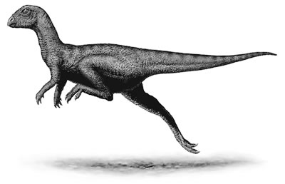
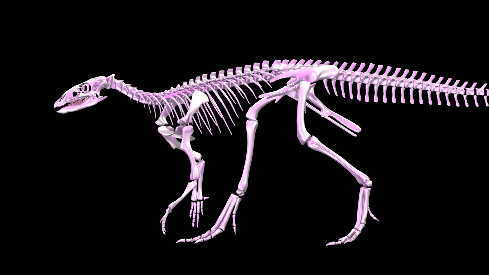

Română
Leaellynasaura, numit de către Tom Rich și Patricia Vickers-Rich în 1989 a trăit pe vremea Aptianului și Albianului din Cretacic, măsurând 2 metri lungime. Această specie de dinozaur erbivor trăia predominant in Victoria, Australia, acela fiind locul unde s-au găsit numeroase specimene de fosile, inclusiv un schelet parțial și un craniu.
English
The Leaellynasaura, named by Tom Rich and Patricia Vickers-Rich in 1989, lived during the Aptian and Albian of the Cretaceous, measuring 2 meters long. This species of herbivorous dinosaur lived prevalent in Victoria, Australia, which is where numerous fossil specimens have been found, including one partial skeleton and a skull.